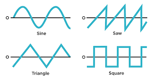

Generación de sonido
Los sintetizadores producen sonido mediante osciladores electrónicos capaces de generar diferentes tipos de ondas.
Las ondas seno, cuadradas, triangulares y diente de sierra son la base de muchos sonidos electrónicos modernos.
Ondas Sonoras

Filtros y modificación
Después de generar una señal, el sintetizador utiliza filtros para modificar frecuencias específicas del sonido.
Esto permite crear sonidos más brillantes, oscuros, agresivos o suaves, dependiendo de la configuración del instrumento.
Envolventes y dinámica
Las envolventes controlan cómo evoluciona el sonido a lo largo del tiempo.
Parámetros como ataque, decaimiento, sustain y release permiten definir la personalidad de cada sonido.
Cómo funciona un sintetizador
Control mediante teclado
Muchos sintetizadores se tocan mediante teclados MIDI que envían señales digitales para activar notas y modificar parámetros.
Actualmente también existen sintetizadores virtuales controlados desde computadores y software especializado.